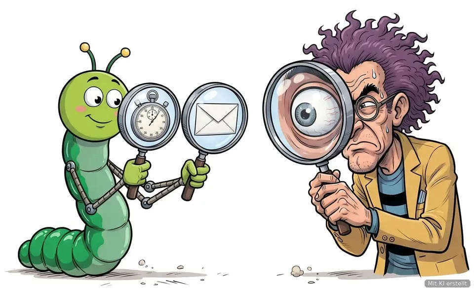
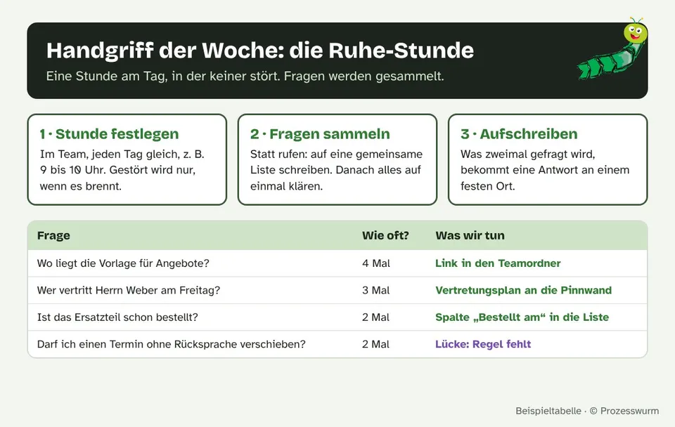

Der Montags-Wurm · 16. November 2026
Hast du mal kurz?
SALVE! „Hast du mal kurz?“ Drei Wörter, und der Gedanke ist weg. Ob im Büro, in der Praxis oder in der Werkstatt: Wer ständig unterbrochen wird, fängt jeden Tag dutzende Male von vorn an. Diese Woche geht es darum, wie ein Team Ruhe in den Tag bringt, ohne dass jemand unerreichbar wird.
1. Aktuelles aus dem Prozessmanagement
Hast du mal kurz? Warum jede kleine Frage länger dauert

Mit KI erstelltIm Sommer hat das Meinungsforschungsinstitut YouGov im Auftrag eines Anbieters von Büroflächen 965 Büroangestellte befragt. 28 Prozent sagen: Eine ganze Stunde am Stück ungestört arbeiten, das schaffen sie nicht. Bei den Frauen sind es 31 Prozent, bei den Männern 24 Prozent. Knapp jeder Dritte fühlt sich oft oder sehr oft gestört.
Spannend ist, was stört. Nicht in erster Linie das Handy oder der Chat, die nennen nur 15 Prozent. Vorne liegen Telefonate und Videoanrufe (34 Prozent), Gespräche anderer (33 Prozent) und spontane Unterbrechungen (28 Prozent). Also Menschen. Meistens nette Menschen mit einer kurzen Frage.
Was das mit deinen Abläufen zu tun hat
Eine Unterbrechung kostet mehr als die zwei Minuten für die Antwort. Danach muss der Kopf den Faden wiederfinden. Eine Tagebuchstudie mit 637 Beschäftigten aus 25 Unternehmen hat das 2022 gemessen: Wissensarbeit wurde rund 15 Mal pro Stunde unterbrochen. Das Wiederhineinfinden kostete mindestens 15 Prozent der Bearbeitungszeit.
Viele „kurze Fragen“ sind in Wahrheit Lücken im Ablauf. Wer fragt, wo die Vorlage liegt, wer zuständig ist oder wie der Stand ist, fragt, weil es nirgends steht. Jede Frage, die zweimal kommt, gehört aufgeschrieben. Das ist dasselbe Prinzip wie bei der Einarbeitung neuer Kollegen.

Mit KI erstelltHandgriff der Woche: die Ruhe-Stunde
- Eine Stunde festlegen. Gemeinsam im Team, jeden Tag zur gleichen Zeit, zum Beispiel von 9 bis 10 Uhr. In dieser Stunde wird nicht gestört, außer es brennt wirklich.
- Fragen sammeln statt rufen. Wer in der Ruhe-Stunde eine Frage hat, schreibt sie auf eine gemeinsame Liste. Danach wird alles auf einmal geklärt.
- Was zweimal kommt, wird aufgeschrieben. Die Antwort kommt an einen festen Ort, den alle kennen. Dann muss beim nächsten Mal keiner mehr fragen.
| Frage | Wie oft? | Was wir tun |
|---|---|---|
| Wo liegt die Vorlage für Angebote? | 4 Mal | Link in den Teamordner |
| Wer vertritt Herrn Weber am Freitag? | 3 Mal | Vertretungsplan an die Pinnwand |
| Ist das Ersatzteil schon bestellt? | 2 Mal | Spalte „Bestellt am“ in die Liste |
| Darf ich einen Termin ohne Rücksprache verschieben? | 2 Mal | Lücke: Regel fehlt |
Ruhe ist keine Frage der Raumgröße
75 Prozent der Büroangestellten in derselben Umfrage sagen, ein Großraumbüro mit sieben oder mehr Plätzen erschwere konzentriertes Arbeiten. Ruhe muss aber nicht teuer sein: ein Zeichen an der Tür, ein Hinweis im Chat, ein Telefon, das in dieser Zeit eine Kollegin übernimmt. Im Laden oder in der Pflege ist eine ganze Stunde oft nicht drin. Zwanzig Minuten für die Dokumentation, in denen jemand anderes die Klingel übernimmt, helfen auch.
Quellen: Dashöfer über YouGov für Satellite Office, 23.7.2026 · Personalwirtschaft über die Studie von Starker u. a., 11.9.2022
2. Märkte und Nachrichten
KI mit Not-Aus, am liebsten aus Deutschland
Bitkom: 92 Prozent wünschen sich einen Not-Aus für alle KI-Systeme. In einer repräsentativen Telefonumfrage unter 1.006 Menschen ab 16 Jahren wollen 92 Prozent, dass sich jede KI abschalten lässt. 85 Prozent wünschen sich strengere Regeln für besonders leistungsfähige KI. Trotzdem sehen 56 Prozent in KI eher eine Chance als ein Risiko. Veröffentlicht am 10. November.
Quelle: Bitkom, 10.11.2026
Fast alle Unternehmen hätten gern KI aus Deutschland, aber nicht um jeden Preis. 96 Prozent würden bevorzugt KI von deutschen Anbietern nutzen. 64 Prozent aber nur, wenn sie dafür weder mehr zahlen noch auf Funktionen verzichten müssen. Befragt wurden 603 Unternehmen ab 20 Beschäftigten, veröffentlicht am 2. November zum Digital-Gipfel der Bundesregierung.
Quelle: Bitkom, 2.11.2026
Was das für dich heißt: Ein Not-Aus ist im Grunde nur ein klarer Ablauf für den Notfall: Wer merkt, dass etwas schiefläuft, und wer darf anhalten? Das gilt für KI genauso wie für jede andere Maschine. Und wer neue Werkzeuge einführt, sollte zählen, wie viele es schon gibt. Jedes Programm mehr ist ein Fenster mehr, das sich meldet.
3. Zahlen und Erkenntnisse
Unterbrechungen in Zahlen
- 28 Prozentder Büroangestellten schaffen keine Stunde am Stück ohne Störung (YouGov für Satellite Office, 965 Büroangestellte, berichtet am 23.7.2026). Heißt: Für mehr als jeden Vierten ist konzentriertes Arbeiten Glückssache.
- 15 Mal pro Stundewurde Wissensarbeit im Schnitt unterbrochen, also etwa alle vier Minuten (Starker u. a., 637 Beschäftigte aus 25 Unternehmen, Tagebuchstudie, berichtet am 11.9.2022). Heißt: Wer eine halbe Stunde für eine Aufgabe braucht, fängt rechnerisch sieben Mal neu an.
- 34 Prozentnennen Telefonate und Videoanrufe als Störfaktor, Benachrichtigungen und Chats nur 15 Prozent (YouGov für Satellite Office, berichtet am 23.7.2026). Heißt: Die größte Ablenkung ist oft nicht das Handy, sondern der Mensch am anderen Ende der Leitung.
Quellen: Dashöfer über YouGov für Satellite Office, 23.7.2026 · Personalwirtschaft über die Studie von Starker u. a., 11.9.2022
4. Sehenswert
Verliert unser Gehirn den Fokus? (ARTE, 28 Min.)
Push-Nachrichten, kurze Videos, ständig etwas Neues: Das ARTE-Wissensmagazin „42 – Die Antwort auf fast alles“ fragt, ob unsere Konzentration wirklich schwindet. Oder ob sich unsere Aufmerksamkeit nur an eine Welt voller Reize angepasst hat. Keine Panikmache, sondern ein ruhiger Blick auf eine Frage, die viele umtreibt.
Warum sich die 28 Minuten lohnen: Wer versteht, wie Aufmerksamkeit funktioniert, plant den Tag anders. Schwierige Aufgaben in die ruhige Zeit, Kleinkram gesammelt danach. In der ARTE-Mediathek, verfügbar bis 14. Dezember 2026.
5. Aus der Lernwerkstatt
Wo geht die Zeit hin?
Zur Ruhe-Stunde passt die Lektion „Zeit- und Informationsanalyse: wo genau hakt es?“ aus Stufe B2. Dauer: sieben Minuten. Ein kleiner Auszug:
Zum Merken: Die Zeitanalyse zeigt, wo Zeit verloren geht. Die Informationsanalyse zeigt, wo Informationen hängen bleiben.
Mini-Übung: Denk an einen Ablauf. Schreib eine Stelle auf, an der vermutlich am längsten gewartet wird, und eine, an der dieselben Daten mehrmals eingetippt werden.
Teste dich: Warum sind bei der Zeitanalyse Ausreißer wichtig? Die Auflösung steht in der Lektion.
Schwarz auf weiß: die Urkunde
Jeden Montag wartet auf der Startseite der Lernwerkstatt eine neue Lektion der Woche. Und wer eine Stufe geschafft hat, bekommt eine Abschlussurkunde. Zum Ausdrucken oder mit einem Klick fürs LinkedIn-Profil. Kostenlos und ohne Anmeldung.
6. Lied oder Kurzvideo der Woche
Kurzvideo: Wichtig oder dringend?
Das Telefon klingelt, eine Mail blinkt, jemand steht in der Tür. Aber ist das gerade wichtig oder nur dringend? Ein kurzes Video vom Prozesswurm zu genau dieser Frage. Passt zur Ruhe-Stunde: erst das Wichtige, dann der Rest.
Alle Lieder und Videos findest du auf prozesswurm.de unter „Hören und sehen“.
7. Zum Schluss: Ein Satz zum Mitnehmen
„Wer überall ist, ist nirgends.“
Der Prozesswurm nickt: Wer bei jeder Frage sofort springt, ist bei keiner Aufgabe richtig da. Die Ruhe-Stunde schenkt dem Team wenigstens eine Stunde am Tag, in der jeder ganz bei einer Sache ist. Doktor Kuddelmuddel ist stolz: „Überall gleichzeitig? Das nenne ich Präsenz. Dass mich trotzdem nie einer findet, ist ein ganz anderes Thema.“
Dieser Newsletter erscheint weiterhin jeden Montag. Vielen Dank für deine Zeit. Feedback, Anmerkungen oder Themenvorschläge? Schreib mir gern an info@prozesswurm.de.
Dein Prozesswurm